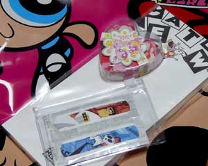

ステキー
ステキー(日記とか言うモノ)
昨日ニコロデオンのホテルがどうとか書いたけど、日本のUSJでは・・・
「鋼の錬金術師」のアトラクションが出来るんですか？？？
海外のユニバーサルスタジオにはニコロデオンのアトラクションがあるので、そっちを期待してたのに・・・なんてこったい。というか、大阪のテーマパークっぽくなってきましたな。なんでもアリ。
でもなあ、サイクルや流行の早い日本アニメを持ってきて大丈夫なんだろうか？たしかに、原作はまだ続いてますが、投資を回収する前にブームが過ぎてたりすることないんだろうか。人ごとながらもちょっと心配してしまう。
テーマパークといえば、「日光江戸村から撤退」日光江戸村も経営危機！一応、継続はするとはいってるけど、潰れちゃったりするんだろうか。ものすごく行きたい日光江戸村なんだけど、まだ行ったことないんだよね。潰れる前に行かなくては！！！
今日のティーンタイタンズ。
スターとレイブンの入れ替わり話。これまた傑作！二人の対比がとことん面白い。日本語版のスターのお嬢様言葉がさらにボケっぷりを加速させていて、すばらしく楽しい。つか、大笑いして見てた。
「役割語」がキャラクター性をより過剰に修飾していて、この話は英語より日本語のほうが楽しめるんじゃないかと思う。
特に呪文もなしにレイブンの魔力を振りまいてばかりのスターだったが、とするとレイブンのあの呪文というのは魔力を発動するものではなく、魔力を制御するためのものなんだろう。
生まれたところはアズラスとレイブンは語っていたが、今後もこうやって少しづづレイブンの過去が明かされてゆくのだろうか？なんかどっかのシーズンのクライマックスはレイブンの因縁話になったりするような気もするけどどうなんだろ。ラスボス、レイブンパパみたく。
今回はさらに動きもよかった。特にスターファイヤー（中身はレイブンだが）。
後半の、ゴリラになったビーストボーイの手からふりきって、回転、蹴り！の動作など、エアマスタークラスのダイナミック大回転アクション！（あれだけ激しく動かしながらもパンチラは描かないという、テクニックというか、信念も素晴らしい）
動かしがいのあるキャラクターなんだろうなあ。手足が長いのも動きがダイナミックに見える要因なんだろう。
ここまで来て、あらためて第一話を見返すと、ずいぶんテンポも良くなってきている。またそれとは別に、日本語版の声優もあからさまに良くなっている。やはりキャラをつかむまではちょっと時間がかかるものなんだろう。そんなわけで、これからさらにノリノリになっていきそうで楽しみ。
ねこみそさんのマンガおもしろすぎ。やっぱり女の子は複雑なのですね。
ついでだが、コミック版のTeenTitans
Go!#13を買った。
やっぱりこちらも増量号でおまけマンガと・・・ティーンタイタンズの塗り絵付き！！
それにしてもどんどん、Todd Nauckは自分絵になってゆく・・・(笑)Young justiceを思い出すなあ。
さらにCARTOON NETWORK BLOCK PARTY #3も買ってみたが、うーーーん。
ビリマンのコミックはひどすぎる。これはないよなあ・・・
こちらのオマケはKNDの再録。やっぱ、KNDのコミックは良いね。このおまけが一番面白かった。
今日のPpG
バブルスメガネ〜〜！も、いいけど、今見ると「わるいことはイイこと」もけっこう見所多くていいですね。
ブロッサムのリボンをかきわけて覗くバブルスとか。ブロッサムに手を絡めて寄り添って泣くバブルスとか、その後のイイコトおもいついたブロッサム邪悪顔とか。この話のプリンセスも好き。
最近は3人揃った時の表情の違いというのがけっこう目に付くようになりました。
プリンセスの家のものも盗まれて、しかたなくガールズに哀願するプリンセス。
怒り顔のバターカップ、困った顔のブロッサム。そして・・・バブルス？？
ふーん。
なに！この醒めた顔は！！この状況でこの顔！
やっぱバブルス怖ええ。
そうか！これはアレですか、「別れた前の恋人が、ヨリを戻そうとした時の反応」なんですね！
バターカップ・タイプ
「ふん！なによ、どのつら下げてきたってのよ！あんたとは終わったのよ！プンプン」
ブロッサム・タイプ
「いまさらそんなこと言われても・・・困ったわ。どうしようかしら・・・」
バブルス・タイプ
（こんなののどこがよかったのかしら。もうどうでもいいし、ウザいなー）「ふーん」
やっぱバブルス怖ええ(((( ;ﾟДﾟ)))
ところで・・・この話の冒頭に出てくるセデューサはかっこいいですね。
ステキー
いつのまにやら、Hi
Hi Puffyのグッズまで出来てました。
といっても、まだTシャツだけなんだけど。でも図柄を見るとアニメの絵ではなく、パフィーそのもののTシャツ。やっぱり、カートゥーンネットワークがパフィーそのものをプロデュースしてるのか！？
このまま、カートゥーンネットワークのイメージアイドルみたくなったりするんだろうか？
そういや今日みたTTのグルービーズでは英語版の歌だった。やっぱり日本語版と英語版の2種類のバージョンがあるみたいだね。うーむ、日本語歌詞だとアホだが、英語だとかっこいい。連呼系ってこともあるけど、キャッチーな耳に残る曲。子供うけもよさそうだ。ギターウルフもいつの間にか子供達への知名度があがりそう。
今日のティーンタイタンズ。
レイブンの内面へ侵入〜〜。くわーー、おもしろいね。いよいよノってきたか！って感じのティーンタイタンズ。おどおどしたグレイレイブンがかわいい。
なんちゅうかこれで一気にレイブンファンが増えた予感。
怪力スターファイヤーを必死で止めようとするロビンもいい感じ。サイボーグやビーストボーイにしても、うまくキャラが動き始めた感じがする。明日はいよいよスターとレイブンの入れ替わり話。これまた怒濤の攻めでレイブンファンが増えそう。
なんか、ティーンタイタンズって女の子話のほうが面白いんじゃなかろうか。・・このあいだのサイボーグ話には悪いけど。
ただ、一つだけ不満が。レイブンの心の分身の中に「メガネっコ」レイブンがいたんですよ！なぜ活躍しないですか！フード外さないですか！再登場希望！！！（いや、さすがにないだろうけど）
米ニコロデオンのサイトを覗いて、なにげなく右の広告をクリックしてみたら・・・
なにこれ〜〜〜！！
ニコロデオンホテルってのが来年の春にできるの？？？！！いきてえ！
Orlandoってどこだ？フロリダ？ ディズニーリゾートの近くみたいですね。
・・・・あれ？ジェニーの姿がない・・しょせんはガキむけか。ちっ。でも行きたい。
土日になると調子が崩れるのは、なんなんだろう。だるい。
いつのまにか、ティーンエイジロボットやチョークゾーン、Fairly Odd Parentsなんかを制作している「Frederator Studio」にBlogが出来たようです。＞The Frederator Studio Blog
ジェニーの描き方の◎×とか、チョークゾーンの絵コンテとか公開されていて楽しい。（ペニーはやっぱかわいいな）チョークゾーンの絵コンテの下の方にある文字が「あれ」に、読めるんだけど、これもやっぱりHi Hi Puffyの「がしがし」と同じで、空耳ならぬ空文字なんだろうか？
ちょっとした偶然から「こんなとこにもPpG」を発見したので追加したんですが、最近海外の方からもなんか情報いただいたのでした。
英語なんで、内容ちゃんと理解していないかもしれないんだけど、「Foster's Home For Imagenary Friends」にも「こんなとこにもPpG」があるみたいですね。（読まれているみたい（汗；）
どの話かはわからないんだけど、フランキーの着ていたTシャツがパワパフ柄なんだとか。そうなの？
絶対あるんではないかと思ってはいたので、日本上陸がまちどおしいです。
・・・と、いいつつ日本でも見れなくはないようです。
そちらの話によると、KNDのDVDにFHFIFがオマケで入ってるんだとか。本当かなあーー。
ホントだ！！！！
詳しいこと聞きたいんだけど、返事を書ける英語力が・・・・かなり苦戦してます。あうー。
そういや、今日のKNDは日本話でしたね。最近は2週目以降とかは英語で聞くようにしてるんですが、クキを狙う双子の兄弟の片方はタラ・ストロングのようでした。「ばにーばにーノ楽シイダイボウケン！」の時のように日本語喋って欲しかったなあ。やっぱりレイブンやイングリッドと違って、こっちの感じの声のほうがわかりやすい。
私信ですが。
おめでとーーーー。自分のことのように嬉しかったりします。
さて一方の自分はというと、12月の仕事のスケジュールがハッキリして青くなってたりします。重なりすぎ。うすうすは思っていたけど、めちゃくちゃだ。人のことは言えないけど、どうして人間というのはギリギリになるまで行動しないものなのか。あー、今から憂鬱。
こちらで紹介されていた「Harry
Johnson」がけっこう気になってます。
内容はどうも、おっさんくさい私立探偵のインディージョーンズものって感じなんですが、
こちらの公式サイトを見ると、カバーアートを見た限りではピンとこなかったものの、
キャラクターやスケッチを見て興味津々。ブルース・ティムにも通じる、パルプマガジンテイストのいかにもなカートゥーンキャラで、好み〜。（この場合、海外アニメーションの意味でのカートゥーンではなく、強いデフォルメの絵柄のコミックとしてのカートゥーンを意味します）
野武士みたいなおサムライさんはともかく、おねえちゃんたちがええねえ。PlayBoyのヒココママンガにでも載ってそうな、いかにもなキッチュさがたまりません。
特に、ナチスの女将校みたいのが良いです。
メガネ・ポニーテール・軍服、そしてムチにハイヒールにワルサー、ナイスバディに無意味な露出(笑)。でも首にはスカーフと、おいしいとこついてくるよなあ。
「レックス・スティール」といい、こういう雰囲気が好きな人っていっぱいいるんだろうな。
今日のティーンタイタンズはサイボーグ話。
しかし、さすが第一シーズン、見事なまでのカオスっぷり。ギャグなのかシリアスなのかよくわからない。Mumboを追いかける4人は背景含めてギャグタッチ、一方Fixitに監禁されてるサイボーグの方はシリアス。
うまく流れが繋がっていないようなんだけど、（結局サイボーグの方は勝手に解決しちゃうし、役立たずな4人）こういうのが見れるのも逆に初回シーズンならでは。
実際今週分を見てきていてもわかるように、「日本のアニメの手法を取り入れ」など言われているTTだけど、実は同じようなANIME的エフェクトは少ない。常にいろんなタイプのANIMEやMANGA的手法をおこなっている。同じ顔が崩れるにしても、そのパターンは様々だし、常に集中線や流線の背景を使うわけでもない。今回の、Mumboの足をぐるぐるさせての走り方なども、この回だけしか見れないエフェクトかもしれない。
第2シーズンになると、KNDの第2シーズンのように、シリーズ全体を貫く話がバックボーンに配置され、もっと構成もよくなってくる。
ライターの力が強いと言われるワーナー系のカートゥーンでは珍しく、筋は極力単純におさえ、逆にアニメーターが自由に様々な演出を実験し楽しんでいる、そんな感じがする。特にこの第1シーズンでは。
「ほら、このANIME、こんな風に走ってますよ！」「いいね、それ採用！」
「ビックリした時はこんな感じの目に」「いいね、それ採用！」
「ねえ、こんどはこーいう顔にしましょうよ」 「いいね、それ採用！」
とか、各自好きなANIME持ち寄って ワイワイやってたのかしらん。そう思うとちょっと楽しい。
今後ANIME的演出については、だんだんこなれてきて、よりなじんでくるだろうけど、あまり上手くなりすぎてしまうのも寂しい気がする。ほどよく、「ちょっとこの使い方どーよ？」ってくらいのヘンさが残っていて欲しいものだ。
そーいう私はMAD TVを見て笑ってたりする。おかしいなあ・・昔はちっとも面白くなかったんだが・・・だんだん、感覚がアメリカ的になってしまっているのか？
MAD TV内でやってるミニカートゥーン「SPY vs SPY」は面白いですね。デザインもかっこいいし。
ところで、今日ガーフィールドを見たら、巨大ロボットが出てきた。
しかも今やってるスパイダーマンのようなマッチョあごワレヒーローとかも・・・
巨大ロボといえば「日本」と思いがちがが、これはどっちかって言うと、トランスフォーマーやG.Iジョーみたいな作画。わはははは、ガーフィールドにもこんな話があったんだ！
◇
検索とかしてる途中でこんなの見かけた。
なぜGoogleではなく、Yahoo!
JAPANか?
個人的にちょっと衝撃的でした。なぜなら、「いまどき検索ってたらGoogleだろ？それ以外使ってるやつなんてもういないよ。ヤフーに登録したってナンセンス」なんて思っていたから。
ところが、特にこの日本では、やっぱりYahooなんですね。「google使わない」「知らない」なんて意見も・・・
信じられない・・・いや、そう思う自分の感覚がズレているのか？
Yahooを使う人はTVでも見るかのように「なにか面白いものないかな〜」という感覚で、google使いはもっとマニア的専門的感覚なのだろうか？そして日本人は圧倒的前者が多いと。うーん。
ちょっと気になって自分のとこのアクセスを見てみた。（実は検索エンジンでのアクセス解析は初めて見た）うお！
やっぱりYahoo!JAPANがトップ。続いてGoogle。この2つがダントツで、かなり減ってMSN searchが続く。その後はgooやexciteやinfoseekが団子状態。
ちなみに検索ワードはティーンタイタンズ関連がぶっちぎり。やっぱ、反響あったのね。
と、ここまでだと、やっぱYahoo!JAPANだよな、ってことになるんですが、これは今週の結果。
これを月単位や、先月、先々月まで広げてみると・・・
Googleが Yahooをはるかに上回るぶっちぎりのトップに！「なぜGoogleではなく、Yahoo!
JAPANか?」やそのトラックバックの記事でみられるような「やっぱりYahoo」というような結果ではないんですね。
うちはgoogleで検索して訪れる人が多いってことか。マニアが多いってコト？？？？(笑)
だから、逆に、ティーンタイタンズが放送開始した今週だけ、「Yahoo」で「ティーンタイタンズ」で検索してくる人が圧倒的に増えたという現象のようです。・・・これはどう解釈したものか。
特にマニアでもない普通の人がティーンタイタンズに興味を持ち始めたってことでいいのか？それも恣意的な気もしますが。
ちなみにここ4ヶ月の総検索ワードでトップだったのは「キム・ポッシブル」でした。2位が「ティーンタイタンズ」そして3位が「パワーパフガールズ」おいおい(笑)
今日のティーンタイタンズはカミナリ兄弟ですか。
まだみてません。ま、別にどーでもいいかな。（われながらJINXの時とえらい違いだ）
パワパフコミック＃56とスペースゴースト＃1を読んでます。
パワパフは今回大増量。といっても、古い作品の再録が掲載されているからなんですね。
新作のほうはやっぱりたあいないんだけど、今回はちょっと面白いかな。
カレとガールズのチャリンコ対決傑作(笑)！
スペースゴーストのオリジンを描くこのシリーズ、なかなか重いスタートです。斜め読みしかしてないので間違ってるかもしれませんが、
どうも宇宙治安軍の「Phontoms」ってチームみたいなとこに所属していた主人公。
しかし、その上司は正義どころか悪事をおこなっていたようで、正義感あふれる主人公はブチキレ。
だが、逆に捕まってしまい、身ごもっていた妻は殺され、主人公も撃ち殺されて物語は続く・・・
というわけで、まだゴーストにはなっていません。これから死の淵から生還、復讐鬼ゴーストとなって蘇るのかな？「5000光年の虎」みたいな展開だったら嬉しいなあ。
ところで、この元ゴーストの主人公の名前がよくわからん。コミック中では「Hammer」と呼ばれていたみたいだけど、コードネームっぽいしなあ。SGC2Cでは本名はTad Ghostalってことらしいけど、これは信用できないし(笑)
Hammer・・ハンマー・・・範馬・・・範馬！
そうか！ゴーストになる前はオーガだったのですね！！（すいません、わかる人だけわかってください）
ところで、最近ディズニーチャンネルの「バーバリアンデイブ」がなかなか面白い。
こちらも第2シーズンにはいったせいもあるかもしれないけど、バカバカしさがえらくスケールアップしてるのが楽しい。ぬいぐるみを買うために重税をしいたり、国ひとつぶっつぶしたりと、ギャグが国家単位になってきてるんだよなあ。それにデイブとキャンディとファングがよく動くようになった。逆におじさんと魔法の剣の影が薄くなったような・・・
「こんにちはお嬢さん」
はいっ！今日はTT「Final Exam」でした。
あーー、やっぱJINXいいよ。
そもそも、最初にTeenTitansのアニメ化の話やキャラを見た時には、そんなに積極的に興味をもっていたわけでもなかったし、むしろ「これってどーなのよ？」という感じすらあった。
なにしろそのころは、TTよりビリー＆マンディー（当時はグリム＆エビル）やティーンエイジロボット、そしてパワパフの新作のほうが気になって気になってしょうがなかったのですよ。
そこで、JINXですよ。
もう、これでやられたね。このキャラだけで、一気にTeenTaitansが気になる存在に。
そんなJINX話が今日。これだよこれ。
TeenTitansはジャスティスリーグのような濃厚さはないけど、その分軽快な流れが魅了。
ティーンといっても、X-MENエボともまた違ったノリで、二番煎じではなく、ちゃんと差別化されてるのが良いですねえ。
今回はアクションとJINXを拝む回です。華麗な身のこなしが！小悪魔的な笑顔がっ！あの細い腰が！貧乳が！
う〜ん、ろまんちっくぅぅ(；´д｀)ﾊｱﾊｱ
気になる声も特に問題なし。ていうか、JINXセリフ少な目。ところで、サイボーグって手分離させて戦ったほうが強くね？
JINXの吹き替えの声優って誰なんだろう。主要メンバー以外は役名クレジットされないのでよくわからんのですよ。
乃木まこと 黒河奈美 酒井敬幸 村上あかね の誰かなんだけど・・・
多分順番的にギズモ、ジンクス、マンモス、スレイドとしゃべってたおばさん。 だと思うので、暫定的にJINX＝黒河奈美としとくかなあ。
◇
HiHi Puffy AMIYUMIがなんかトンデモないことになってるようで。日本の報道はトップのニュースにありますが、もう少し詳しくみると、
Animation
Insiderでの記事 ToonZoneの投稿記事
Kids 2-11では3.9で1,555,000 viewers、歴代1位、
Kids 6-11では4.4で1,068,000viewers、歴代2位
で、なんかもの凄い感じに視聴率が跳ね上がったみたいなことも書いてある。
あくまでカートゥーンネットワーク内での話だし、そのうえアメリカのレーティングは細分化されてたり、日本とカウントの仕方が違ってたりとイマイチよくわからんのだが、なんか凄いらしいことはわかる。
ただ、さすがにもの凄くイイ出来のカートゥーンとは思えないので、これは期待値が高かったんだと思う。
なにしろそれまでTTの主題歌でずっと聞いていたわけだから、CN視聴者の中ではものすごく知名度は高かったんだろう。 それに加えバスやら看板やらポスターでの大宣伝。
作品そのものの面白さを期待して見たというより、「いったいどんなカートゥーンなんだろう？？？」というものが一番強かったんじゃなかろうか。そもそも歴代何位というのは初回放送の記録だし。
海外のフォーラムやら覗いてみると「okaa-san」ていうのは「mother」って言う意味なんだよ、知ってた！えぺんぷい。とか、J-POPというのはね〜うんうん。といったものも多く見受けられた。いろいろな日本への思いを含めて盛り上がっていたような感じだ。これは、Puffyが凄いというより、その日本への想いの「核」となるべきキャラクターを発掘したプロデューサーの手腕を誉めるべきなのかもしれない。
しっかし、ホントに本気で目玉番組にしようと目論んでいたんだなあ・・・CNは。
とりあえずは初回の盛り上げには成功ってことでしょう。
問題はこれから先かな。このまま維持するのか、それとも並に戻るのか、はたまたトンデモない広がりをみせるのか、むしろこれからが正念場って気がします。
でもなあ、他局で全然人気が無かったドラゴンボールを大ヒット作に仕立て上げたCNだから、そういう戦略にはぬかりがないようにも思える。今後の動きもちょっと興味深い。
ただ、あんまりヒットしすぎると日本に来たときに、うっかり地上波放送とかになったりすると面倒くさいのでそこが逆に心配。できれば、ゆる〜くヒットして、日本ではもう話題にならないくらいになったときに上陸してくれるといいんだけどなあ・・・
個人的には、内容はいかにもなカートゥーンなので、日本でも同じようにウケるとは思えない。よって地上波だと中途半端に吹き替えされて、残り話数放置でうちきりとかありそうなのでヤなんだよ。（トータリースパイズのように）
だいたい地上波でやったら二カ国語放送じゃないじゃない！！オレはAMI役のJanice Kawayeさん声が聞きたいんだよ！！！！！！！だから、もうヒットしないで！
それにしても、Hi Hi Puffyのテーマソングの歌詞で「Anything is possible !」って歌ってるけど、こりゃもう確かになんでもアリですね。
と、ココまで書いてsonyのパフィサイト覗いたらレポートが掲載されていた。
読むかぎり本当に凄い宣伝活動してたんだと思った。看板やらバスやら、しかもCNの放送内でもかなりの宣伝をしていたようだ。そのうえ、「NEW YORK TIMES」や「DAILY
NEWS」にも掲載か。普段カートゥーンを見てない人々でも興味をもった人たちは多そうだ。
ただ、気になる一文が・・・・
「カートゥン史上初と言われる、実写とアニメがひとつになった番組のスタイルを提案したのも彼だった」
Space
Ghost Coast To Coastは無かったことになってるのですか！！がーん。
Harvey Birdmanだって実写バードマン出てくるのに・・・
今日って休日だったんですね。普通に仕事あるから、素で知りませんでした。
CNのメラメラクリスマス、12月1日からクリスマスの日まで、カウントダウンのサンタのミニ番組が流れるそうです。サンタ役に「長井秀和」、エルフ役に「大神いずみ」だそうだ。
なんで、長井秀和？って思ったけど、そうかタイタンつながりなのですね。（長井秀和の所属プロダクションはタイタン）
なんか、うまいこと言ったつもり。
なわけで、今日は早く終わったのでティーンタイタンズをリアルタイムで見れました。
ああ、やっぱりブラックファイヤーお姉さまはええわ。傲慢で自己中心的で華麗で、そして強い。さすが宇宙の女王様！
さて、ここまではとりあえず試写会で見たので、明日こそが自分にとっての大興奮ポイント。第3話もタイタンズが弱っちい話です。このへんもジャスティスリーグと差別化できてすばらしい。仲間割れしても、学生同士のケンカみたいだし。ジャスティスリーグなんかだと、スーパマンが暴言はいたり、ジョーンズがシャレにならない本音言ったり、バットマンは無言で消えたり、フラッシュの言うことは誰も聞かなかったりと激しいですからねえ。
トップ絵は実は最初に考えていたのは別のもので、ちょうどスターが赤毛、テラ金髪、レイブン黒髪だったので、それぞれパワパフにあてはめて、例のハートマークをバックにしたエンドシーンのやつにしようと目論んでいました。しかし・・・
TitansGo.netのお絵かき掲示板に考えていたのとまったく同じものが！！！＞P-BBSの
[1525 ]
で、まああんな感じに・・・
TTの日本語キャストをちょっとまとめてみた。
| 声優（日本） | 声優（オリジナル） | |
| ロビン | 小野塚 貴志（おのずかたかし） | Scott Menville |
| ビーストボーイ | 宮田 幸季（みやたこうき） | Greg Cipes |
| サイボーグ | 魚 建（うおけん） | Khary Payton |
| スターファイアー | 月本 皇子（つきもとこうこ） | Hynden Walch |
| レイブン | 小平 有希（こだいらゆうき） | Tara Strong |
| スレイド | 宇垣 秀成（うがきひでなり） | Ron Perlman |
| ブラックファイヤー | 浅野 まゆみ（あさのまゆみ） | Hynden Walch |
| ジンクス | まだ不明 | Lauren Tom |
サイボーグの人・・・変わったお名前ですね・・・
原語だと
スターファイヤーとブラックファイヤーが同じ人。
レイブンはバブルス、ジンクスはKNDのナンバー3 。
ああああっっ！スレイド！タートルズ（テレ東日本語版）のドナテロだぁぁぁ！うそーーん。
メールで情報いただいたのですが、GONZOがウィッチブレイドを作るってホントですか？
しかも下請けじゃなくて、原作アメコミだけど、日本のアニメとして制作みたいな。まあ、海外も視野に入れてるんだと思うけど。
TeenTitansみたいに、「ANIME風」ではなく、「どうせなら、はじめっからANIMEとしてつくっちゃえばい〜〜じゃん！」とかいうノリで企画が進んだのでしょうか？
そのTeenTitansですが、結局間に合わず、リアルタイムで見ることはできませんでした。家帰ってTVつけたら「ひさしぶり、ゴリラのコンボイだ！」ぎっちょんちょーん。
まあいいや、水曜はなんとしてもリアルタイムで見よう。
CNの12月の番組表が更新されたみたいなんで、覗いてみると、おお！
第2シーズンもぶっつずけで放送。今年中に第2シーズンまで全部放送か。テラちゃんはやくもお目見えですね。
あれ？？傑作「Mad Mod」が無いようだが・・・なぜだ？ あれってなんかマズイシーンとかあったっけかなあ。
それにしても、年末は凄いことになってるなあ。大晦日など、ヤケになってるとしか思えん。カウチキで年をこすのか・・・
Hi Hi Puffyはこのあいだの朝日新聞でも取り上げられたようですね。パフィー、米国へ「輸出」 主人公アニメを毎週放映
ネットだけの話題ではなく、普通に全国規模でのニュースとなったわけだが、あまり期待しすぎないほうがいいかも・・・記事にあるように「６〜１１歳の女児を主な視聴者層に想定」としているのだから、そうそう爆発的にヒットというわけでもないんじゃなかろうか。
あ〜、でもクリスマスプレゼントと考えれば、少しはいくかも。（はっ！それを狙っていたのか？）
とりあえず、アメリカで記録は出なくても、記憶に残る日本人アーチストとなるのは間違いないだろう。この時期（６〜１１歳）に見たものって妙に記憶に残るものだからねえ。
と、ちょっときどって書いてみたが、さらによく考えれば、カートゥーンネットワークって世界規模の放送チャンネルなわけじゃないですか。アメリカどころか世界中にPuffyの顔や歌や名前が知れ渡るってことだよねえ。しかもカートゥーンだから何年も延々リピート放送。
単なるミュージシャンのアメリカデビューより、はるかに巨大なプロモーション。 想像以上に凄いことになったりするんだろうか・・・なんかドキドキしてきた。
"Ms. Onuki"っていう紹介はネタなのか？＜こちらを見ると、ニューヨークでもパフィーバスが走ってるらしい。まあ、当然か。
さらに、でっかい看板もあるらしい。
ショッピングモールにはポスターまで。
20日放送の内容とかはこちら。
本当にバスで世界中をまわる内容のようだ。 （この記事にある「スペイン語がよく出てくるアニメ」ってのはムーチャルーチャのことかな？）
まあ、とりあえず、Puffyもいいけど、その流れでTeenTitansが日本でも、もっと知られると良いな。いや、日本製でビネットとか出てくれるといいなあ・・・と。
今日は調子悪くてなにも出来ずにだらーっと。ただ寝てるのもヒマなので、CSつけっぱなし。珍しくたっぷり見れたかも。
■ダック・ドジャーズ
ニッポノ星目当てだったけど、むしろ後半のマービンの話のほうが面白かった！！
なにしろ、ワリー、クマゴロー、ドラ猫大将、ゼロゼロワンワン。それにちっちゃなバックスモドキ（バスターというより、やっぱりバックスだよなあ）も出るし！K9けなげでかわいいし。
しかもこの展開ってアレに似てるよなあ・・・と思ってたら、やっぱり！！な嬉しいオチまであって、なかなか良かった。ハンナバーベラ、ルーニーファンなら必見かも。
■トータリースパイズ
なぜか見逃していた回だったのでラッキーだった。あいかわらずテンポだけはめちゃめちゃ早い。いつもよりドタバタ加減が増量ぎみで、えらく楽しい。水に濡れて髪がしなだれたアレックスが良い。サムもアレックスも、ヒロインとしてはありえないアホなダンスを披露するは、やっぱ海外アニメだなあ。
■チキ・チキ・バン・バン
ディズニーチャンネルでやってた。チキチキマシン猛レースの題のモトネタになった映画。
面白かった。この時代のこの手のミュージカル作品ってけっこう好きなんですよ。メリーポピンズやオズの魔法使いとかマイフェアレディとか80日間世界一周とか、見てて気持ちいいし。しかも、これは偏屈で頑固なオヤジに子供がいて、そこに勝ち気で積極的で陽気な女性がからんでいって、あれやこれやあるうちにうち解けてゆく・・・ってパターン。このパターン好き。
サウンド・オブ・ミュージックや 王様と私と同じパターンですが、ちょっと違うのは、オヤジが王様でもエライ人でもなく、甲斐性なしの発明家ってとこやね。
■ディズニーパラダイス
で、なにげにつけっぱなしにしてたら、ディズニーパラダイスが始まったんですが・・・
「今アメリカのキッズで人気のヒロインがいるんですよ」えっ！！！

なんとっ！キム・ポッシブル特集！！！ディズニーやっと本気でプッシュする気ですか。
はっ！よく見ればKP・Tシャツ着てるよこいつ！欲しい・・

アメリカのディズニーストアではこんなにグッズが・・・

キムのチアスーツまで！・・・ってスカート透け透けなんですが・・いいのか？
ここまでしたからには、ちゃんと日本のディズニーストアにも入荷するってことですよね、ディズニーさん？
■サブマリン707R
アニマックスでやってた。なんかすっげー面白かった。青の6号より好きかもしれない。こういう知力の限りを尽くした読み合いのバトルは好きだなあ。メカもかっこよかったし。
ただ、少年とか女性のキャラクターが、そこだけカートキャプターさくらみたいなイマドキのデザインだったのが、めちゃくちゃ浮いていてゲンナリ。これで萌えアニメ目指してどーするのよ。
ん、Oh!じゃないスーパーミルクちゃんやってるな。あと、12月からスペースコブラかよ。チェックだ！
そのあと、うつらうつらして目が覚めたら、すこし良くなっていた。これで明日からまたバリバリ仕事を・・やだなあ。ずっと寝てたい。とりあえす、TeenTitansの初回は見れないとしても、夜中のやつだけは間に合いたいものだ。
さて、ATHFでも見るか。
Hi Hi Puffy公開記念ということで、アメリカのCNでは日本語だらけのようす。＞Hi
Hi Friday!
そんなわけで、こちらのお絵かき板でもPuffyなスターとレイブンが＞Hi
Hi Puffy... Ravey Starry?
一方、冬コミではFScの「muZz」＃2が発売とのこと。＞Comic
Archives
でも、「Nightmares & Fairy Tales」#12を最後にFScは制作から離れるとか。えーー！＞FSc、NNFを降板
そうして、ぼーっとCNでもつけてみると、12月の番組紹介のCMに「タイムボカン」が！！
CNでタイムボカンが始まるのぉ〜〜！？
ちなみにドタバッタンのほうが好きでした。でも、足がよく壊れるんだよなあ。
そんななか、新ミュータント・ニンジャ・タートルズのDVDが最近欲しくてたまらんのですよ。
一応、1〜3巻までは持ってるんだけど、それを見た時に「こんだけ面白くて、出来が良くて、話数もあるなら絶対すぐに日本にくるはずだ！」と、思って待っていたんですが、いっこうに来る気配なし。おかしいなあ・・・TeenTitansのほうが先に来ちゃったよ。
そんなことしてるうちに、最新刊では宮本ウサギまで（しかもゲンまで！）ご登場と聞いて、いてもたってもいられない状況に。
アメリカのCNではmiguzi枠で放送してるじゃないのさ！どーして日本ではどこもやらないのよ！
あーーー、もう我慢できないよ。
と、いいつつ今日もATHF見てまったりと。

プールの水を吸うシェイクがかわいくって（笑）
◇
TMNTのDVDを調べてみたが、うーむどうも割高だなあ。
TeenTitans DVDだと、129分で20ドル。字幕付き。しかもDVD だと1.85:1 のワイドなレターボックスサイズ。（なんか欲しくなってきた・・・）
ATHFだと 167分2枚組で30ドル。字幕付き。
インベーダージムにいたっては225分2枚組で 25ドル。
それがTMNTだと一枚60分で14ドル。字幕なし。1.33:1 のTVサイズ。しかも、＃5以降は20ドル。（後半また安くなってる・・？謎な価格設定）字幕無しがやっぱりイタイなあ。
ん、でもそう高くもないかな？
日本のアニメのDVDだと90分4000円くらいが相場か。「鋼の錬金術師」は90分で6000円。そして当然のようにTVサイズで字幕なし。それに比べりゃまだまだ全然安いか。
ちなみに「鋼の錬金術師」の海外版は、音声日本語、英語字幕付きで100分30ドル。
こりゃあ、やっぱり日本のアニメでもわざわざ海外版を買う人がけっこういるわけだ。
mikan0530:
PUFFY@ロサンゼルス
ロスではパフィーのバスが走ってるみたいです。日本のJ-comのパワパフバスを思い出した。
CNのHi
Hi Puffyのサイトでは、ライブ映像まで流すようになった・・・
まるで、CNがパフィーのプロモーションをしているかのようだ。
アメリカでは今日から放送。反響はどのようなものだろうか。
放送スケジュールをみると、7時半から間にパワパフを挟んで、一挙四回放送。（良く見たら、後半は再放送なので、一挙2本か）
Anime
News Network.comのページをみてようやく詳しいスタッフが分かった。
気になっていたキャラクターデザイナーですが、「Shakeh Haghnazian」さん。
・・・・・って、誰？
調べても全然ヒットしない。そもそも、なに人なのかしら。
スタッフも聞いたこと無い人たちばかり。
脚本のMichelle LamoreauxやRobert Lamoreauxらはヘイアーノルドとかで、
アニメ監督面々の、Darin McGowanはジンジャーの青春日記。他はライオンキングとかもろもろ。MikeﾊKazaleがタイニートゥーンに関わっていたくらいで、カートゥーンネットワークスタジオやワーナースタジオの系列ではないみたいですね。ていうか、寄せ集め？
制作体制とかよく分かってないのに「寄せ集め」は失礼かな。
なんにしても、Hi Hi Puffyの絵や映像を見て、「パワパフみたい」とか「ディーディーみたい」といった感想がみうけられたが、結局の所なんの関係もないってことがよくわかった。
改めて、ゲンディらは「新しいカートゥーン」のスタイルを作ったんだなあと感慨深いものがある。
◇
めちゃくちゃ怪しいギリギリ教授でも、「教授」。Professorはやっぱり普通は「教授」と訳されるみたいなんですが、なぜプロフェッサー・ユートニウムはユートニウム「博士」なんでしょう？
思ったのは、ガールズがユートニウムを呼ぶときに「Professor」と呼ぶということ。
「教授」より「博士」のほうが優しく親しみやすい印象がある。そのため、訳者はあえて「博士」にしたんではないだろうか。日本のマンガで古くから呼ばれてきた名称だけあって、「教授」よりマンガちっく。英語ではどういうニュアンスの違いがあるかどうかわからないけど、日本語では「ハカセ〜」のほうがかわいらしいものな。
で、さすがにデクスターは子供なので、Professorにも、Doctorにもなれない。デクスターは「Boy genius（天才少年）」。
さて、ニコロデオンのBoy geniusといえば、JIMMY NEUTRON。
これ、知らない間にDVD出てたんですね！「ジミー・ニュートロン
僕は天才発明家」
まえにCSでやった「天才ジミー君の宇宙大作戦」というやつと同じものっぽいんですが・・・
最近でもこういう邦題の訳しかたの違いってのはあるものなんですねえ。研究家泣かせはいまだ健在と・・・
ていうか、なんでこいつばっかり・・・3Dだからか！日本でも3Dアニメをもてはやすというのか！
で、気になったのが、このジミー・ニュートロンの映画はパラマウントってとこなんですよ。ニックの場合映画はパラマウントと組むってことなんだなきっと。まてよ、映画館とかってパラマウントとユニバーサルって同じ系列だったよな・・・と思って、ちょっと調べてみた。
やっぱりっ！！！
フロリダのユニバーサルスタジオにはニコロデオンのエリアがあるっっ！！
巨大なスポンジボブがお出迎え（笑）もしかして、これが拡張すれば、インベーダージムやティーンエイジロボットのアトラクションも出来るってことでしょうか！
そしていずれは日本のユニバーサルスタジオにも登場？！すげーーーー。
・・・・・・可能性はものすごく低そうですが・・・・
第44回日本SF大会「HAMACON2」にマッドサイエンティストカフェが登場するようです。（お絵描きメインの雑記群より） たのしそう・・・
日本だと最近はやや美形よりになりつつあるマッドサイエンティストですが、カートゥーンだとやっぱり怪しげな方々が多いですねえ。というか、いっぱいいますね。
最近マッドサイエンティストというと思い浮かべるのは
Prof. MEMBRANE（インベーダージム）かなあ。
そうそう、あとなんといっても

Dr.Weird（ATHF）ですな！！
このおっちゃん最高ですね。全然本編には登場しないけど（笑）
マッドサイエンティストカフェもこのくらいの奇人ばかりだと楽しい。
あ、ドクターガストリー少佐でもOK。
ところで、カートゥーンにおいて、プロフェッサーとドクターの違いってなんだろうと思っていたのですが、どうも、社会的にまっとうな地位にいる人はプロフェッサーと呼ばれることが多いように思えます。プロフェッサー・ユートニウムとか。
一方のドクターは、どうやら自称を含む、モグリっちゅうか怪しげな方が多い。悪役なんかはみんなドクター。ドクター・ドラッケンとか、Dr.DOOM（悪魔博士）とか。
それはともかく、マッドサイエンティストカフェはメイドカフェより好きかも。
実験室みたいなフロアでビーカーや試験管に紅茶とか入れて持ってきて欲しい。
メニューも「砂糖」じゃなくて「C12H22O11」という風に化学式で。で、ドリンクとかもってきたら、意味ありげにニヤッとか笑うの。
最高〜〜〜！！
ジャイブから「ハーレイ･アンド･アイビー」がでるとな！（ねこみそさん情報）
ブルースティムのあのハレビーだよね！買いだっ！でも3回のミニシリーズだからちょっと短くないかなあ。ゴッサムガールズもセットだったらいいなあ。
11月21日の「コミティア70」にまんがの森が出展して、FScの本を売るそうです。おまけで描き下ろしポストカードもついてくるとな。ちょい行けそうもないけど、余ったらポストカードだけ店のほうに置かないかなあ。それにしても、まんがの森は本気でFScをプッシュしてるなあ。
いつのまにやらダックドジャーズの新作が始まっていたようです。
TeenTitansにばかり気をとられてすっかり忘れてました。
そんな私は、仕事の疲れをアクア・ティーン・ハンガー・フォース（ATHF）と、ティーンエイジ・ミュータント・ニンジャ・タートルズ（TMNT）をみて癒していたといいます。
あーー、シェイクはほんと性格悪いよなあ。でもミートにはあまり同情できないのはなぜだろう。ATHFの良心フライロック様が最近お気に入り。空飛んだり、目からビームだしたり、サイコキネシス使えたりと、よく考えたらこいつだけはちゃんとスーパーなキャラだったのね。なんでシェイクと連んでるんだろう・・・？
なんにしても、クローズドキャプション付きってのはいいよねえ。リスニングでは聞き取れないものが多いけど、字幕があると、かろうじてギリギリ意味はおえる。日本もつけりゃいいのに・・・海外の日本アニメファンは苦労してそうだ。字幕の分だけ海外DVDのほうがお得仕様。
でも、なぜかTMNTのDVDには字幕がついていないんですよ。FOXのばか。
しかも、広告映像が多いし・・・まあそれはそれでちょっと楽しいけど。野太い大人声の遊戯王とか見れるし。
海外DVDの購入リストも溜まってきたし、年末にはどばあああああっとまとめがいしようかな。
J-WAVEを聞いていたら、ウルフルズのトータス松本が
「僕のトータスっちゅうのはカメの意味なんですよ、で、ニンジャタートルズのタートルってのはウミガメのことで・・・」
なんか、思わぬところでタートルズの名を聞いて、うっかり笑ってしまった。
TeenTitansの主題歌は予告編のCMを見ても、どうやら「日本語歌詞」がデフォルトになりそうな予感。
でも、よく考えたらCNって二カ国語放送なんだよね。きっと英語音声では英語の歌が流れているに違いないと思って、もう別にどっちでもよくなった。
キム・ポッシブルも、キャットドックも、英語放送のほうはちゃんと英語の歌だったし、CNもそうだろう。
TeenTitansの歌といえば、昨日Puffyの全米デビューCDが発売されたはず。反響はどのようなものなのだろうか？とりあえずビルボードに結果が出るのは今月末だろうからまだ分からないだろうけど。
無ければ作る。
やはりそれが基本だろう。
というわけで、着うたを作ってみた。AUだし。
MP3を着うたにするソフトを見つけたのですよ。
http://www.toolwoods.com/t/tyakuuta.html
ここに詳しいことが書いてあったのでそれに従って。
着メロを作れる音感も技術もないので、着メロは作れないけど、これなら変換するだけなんで、簡単でいい。（容量はでかいが）
とりあえず、TeenTitansとキム・ポッシブルの着うたを作ってみた。
すげえ！うちのケータイからティーンタイタンズ・テーマが！
機種によっては再生できない場合があるようだけど、うちのはOKでした。（AU A5302CA）
容量と音のバランス的に、30秒で24Kbbs、モノラル、16Hzが最適かな？
さすがに音質はイマイチだけど、悪くない。
メール転送だから100Kb制限があるけど、メモリーカードがある機種ならもっと長い曲もいけるのかな？
参考までに、キムニケーターの着信音＞■ （たぶんAUのみ）
くれぐれも個人利用の範疇で。
ミルクちゃんのサイトがようやくリニューアルされたみたいです。
まさか、アメリカ公開まで待ってたとか？
ショップにある
「ミルクちゃんギター」と「パワパフギター」の共演が見てえ。
12月のスケジュール公開の時期ですね。CNはとりあえず、メラメラクリスマスとサムライジャックってとこかな。今年もゾラックとモルダーのクリスマスソングが聴けるかしらん。
ニコロデオンはあいかわらず、本当に12月にならないと更新されないので、スルーして・・・
ディズニーチャンネルの12月でも見てみる。
いつかは当然くるとは思ってたけど、思ったより早かった「スペース・レンジャー バズ・ライトイヤー」がご登場。
あと、「ナイトメア・ビフォア・クリスマス」！
やっぱりやるよなあ、当然。 大ファンの人ならデジタルリマスター版の映画もみちゃったと思うけど、やっぱり見よう。うんうん。
ティム・バートンが再び「ナイトメア〜」のスタッフを再結集させて制作中の「Corpse
Bride」も、めっちゃ楽しみですけど。途中で資金無くなったり、トラブルあって頓挫したりしないといいなあ。
「ナイトメア〜」の時に、こんなに手間と金がかかるものは二度とハリウッドでは作られないだろうと言われただけに、今度もちゃんと完成させられることを祈ります。やはり、CGにはない味があるのよ。
そろそろ受験の方達は追い上げ段階でしょうか。誘惑は多いでしょうが、がんばってください。（ま、適度に息抜きも大事ですけどね）
あっ、そういえば、ようやくキム・ポッシブルの新作分を見終わりました。おもしろかった〜。
なんかどんどんロンが好きになってくる。最初は典型的なお笑い要員かな、って感じに思っていただけなのに・・ロンっていいやつだよなあ。
ところで、新作話にはあっというまに落ち目になった男性アイドルグループが出てくるんですが、そのメンバーの一人の名が「デクスター」。メンバーの中でも一番頭がいいとか言われてました。
まあ、デクスターって名前は器用とか利口とかいうニュアンスを含んだ名前っていうことらしいし、それほど珍しい名前でもないので、たんなる偶然なんだろうけど・・・・
でも、前にバターカップという名のロバも出てきたことがあるんですよ。これだって、花の名前だから別に特別なことではないですよ。ですが・・・・
私の中では、これはキムのスタッフによる、カートゥーンネットワークスタジオへのオマージュとして認知いたしましたっっっっっっ！いいもん、思いこみだって。そのほうが、うれしいから。
ますます、キム・ポッシブルが（勝手に）好きになりました。
最近PCの調子が悪いなあと思ったら、原因がわかりました。
壁紙をこいつらにしたからです。
別のに変えたら直りましたもの。絶対こいつらのせい。
と、いうわけで、今はこちらのジェニーの設計図を壁紙に。うひょー。だれか作って。
◇
ようやっと、TTのCM全部見れた！レイブンのやつは面白いなあ。やっぱりいじりがいがあるキャラなのかも。全員そろったやつはアメリカの予告CMと同じだけど、個別のやつは日本オリジナルだね。
とまあ、これでなにが言いたいかといいますとね、なぜいつまでたってもJINXのフィギュアが出ないのかと！
MISS BITTERSも好きだけど、なぜGAZが無いのよと！
幸い、ZIMのほうは第二弾が出ればそっちにはGAZが入るらしいのですが、普通初期セットにいれるべきだろ、レギュラーなんだから。
一方JINXはまったく出る気配なしとはどーいうことでしょうかね。
・・・・やっぱゴスはいろいろと問題あるのか？
ゴスの対極、チアリーダーといえば、キム・ポッシブル。
そのキムの着せ替え人形もついに日本でも買えそうです。＞こんなやつ。 ルーファスまで！
もしかしたら、Hi Hi Puffyもいずれこんな人形が出るのかしらん。
ビーストボーイのモデルさん、なにか顔面に問題があったのでしょうか？
ふと思ったけど、上記のやつだとタイツだけど、レイブンはやっぱり生足なんですよね・・・
あんな格好でうろうろされて、年頃の男子達は大丈夫なんでしょうか？＜おっさん発想
グッズといえば、アダルトスイムのグッズってヘンなのばっかりだよなあ。
これとか、なんかシュールだし、これなんかわけわからん。
てなわけで、いよいよ来週にはスペースゴーストのアメコミが発売ですよ！！
パワパフ＃56と同じ日とは、これも運命か。
どうもまたサーバートラブルがあったみたいで、FTPで繋がらなくなってました。
で、Webで動いていたのはバックアップのやつだったみたいで、一日前のヤツが表示されてた。
まあ、どっちみちテンぱってたので更新なんぞできませんでしたのでちょうど良かったかも。
KNDに出てくるナンバー3の妹、「ムシ・サンバン」ちゃん。
ゼロセットさんのとこで、「こんなとこにもKND」
みたいな。
みなさん、ムシと聞くと「虫」を連想してしますようですが、違いますよ！
あの毎回裏の裏をかいてくる伏線の多いKNDが、そんな安直な名前をつけるはずがないではないですか。
ムシちゃん登場の回「月面基地へ向かえ！」をよく見てみよう。この回はリンカーン姉妹とサンバン姉妹が出てくる「姉妹話」ですが、ここで注目したいのはナンバー5の姉、クリーが実は元KNDのナンバー11だったとわかるというとこ。
11ってことは、10番台の1番だから、元リーダーでもあったのかなあ・・とも思いますが、どうなんでしょう。
それはともかく、この話は、姉と妹、過去のKNDと今のKND、という構造になってるわけですね。そこでムシちゃんですよ。となると役割としては、未来のKNDというというものに相当するわけです。姉妹というのを触媒として過去、現在、未来へと繋がるわけですよ。
過去・現在・未来といえば、北欧神話の運命の3姉妹（ノルン）ウルド・ベルダンディ・スクルドや、ギリシア神話の運命の3姉妹（モイラ）クローソー・ラキシス・アトロポスというように、姉妹で象徴されることが多い。だからこの話も、当然のように姉妹話となってるわけです。
そこでクリーがナンバー11と分かるということは、同時にこの回ではムシちゃんがなるであろう、KNDでのナンバーも分かるということになっているはずなんです。
もうおわかりでしょう。つまり、ムシとは「虫」ではなく、「六四」のムシ。すなわちムシちゃんは後のKNDナンバー64なのです。
Q.E.D 証明終了.
おまけ：そしてクキ・サンバンちゃんはそのうち独立して、日本の忍者学校に行き、おともの虹猿丸とともに「3×3がクキ伝」としてアニメ化されるんですが、それはまた別の話。
「わーたしーくのいち、サザンがクキです〜♪」
（徹夜だったので妄想エンジン入りっぱなし）
ラピュタ阿佐ヶ谷で11月14日より「ラピュタアニメーションフェスティバル
」
今回は余計なお世話のFlashメニューで見づらいなあ。やめてほしいよホント。
それはともかく、どーも君一挙上映って凄いね。
なにより、「くもとちゅうりっぷ」「すて猫トラちゃん」が見たいです。
トルンカもまた見たいかも。電子頭脳おばあさん好き。
が、いつも忙しい時期にやってくれるものだから、毎年いったためしがありません。だれか一緒に行ってくれる人いないかなあ。（最近はどうも一人だとめんどくささに負ける）
アマゾンにゆくと「おすすめ商品」とか勝手に紹介される。いままで買った物やチェックしたものから、なにやら分析するらしく、アマゾン解析エンジンには、はたして自分はどのように見られているのか気になって見てみた。
本のおすすめ：『Roman
Dirge's Lenore』
もってるっちゅうの！そーいやこれはアマゾンでは買ってなかったんだとふと気が付く。まあ、似たようなものいっぱい買ってるからな。
ミュージックのおすすめ：
『Heroes
and Villains [SOUNDTRACK] [FROM US] [IMPORT]』
アマゾンではパワパフものってそんなに買ってないはずだが、なぜかバレてますね。チェックばかりしてたからでしょうか？
ゲームのおすすめ：
『ドラゴンクエストV
天空の花嫁 (DQ VIII プレミアム映像ディスク同梱)』
なぜかドラクエ。すいません、ゲーム機もってないんです。ゲーム関連はほとんどチェックしてないので、無難なとこが選ばれたか？
ソフトウェアのおすすめ：『えいご漬け』
そりゃまあ、洋書ばかり買ってるからそう見られてもしかたがないかと・・・
DVDのおすすめ：
『イジー・トルンカの世界
vol.2 ― 「電子頭脳おばあさん」その他の短編』
やばっ、ばれてる。しかも好きな作品の多い2巻のほうだ。そういや、これも映画館で見てDVDは持っていない。だから買えということですか？アマゾンでチェブラーシュカ買ったのを覚えてやがったか。
意外性なさすぎで、全然おもしろくない。
うーん、でも私がアマゾンで購入するものってかなり偏りがあるので、こうなってもしかたがないかとも。ああ、なんてつまらない人間なんだー。
◇
Candy Rainさんのとこで知ったんだけど、「音象学」というものがあるらしい。語感による印象とかそんなもの。まあ、このあたり商品名とか毎回悩んでいるコピーライターとかにはなんとなく分かってることかもしれませんが。
そこで、子供に人気が出る音とは？
「P」
世界一うけたい授業「今週の成績掲示板」より
PowerPuff Girlsなんて2つもありますよ！子供に大人気間違いなしのネーミングですな！
・・・番組見てないからわからないけど、参考例としてポケモンとか出てそうだなあ・・・・アンパンマンとかも。
はっ！そういや私も・・・SUKAPONTA。子供に人気・・・あるのかなあ・・・？
この理論でいけばバターカップが一番人気がでてよさそうなのだが。最後にpではダメなのかも。最初にpが付くのが効果的？ スーパーマンよかパーマンのほうがより子供に人気ということでしょうか。
ただちょっときになるコメントが。
「 おっぱいを吸う時の行為に似ており、潜在的に子供にとっては 快感であり」
パワパフ好きなやつはおっぱい好き〜〜〜〜。ヽ(´ー｀)ノ
なんか忙しくなってきた。
ティーンタイタンズの長めのCMまだ見てません。真夜中には流れないのだろうか・・・？
アダルトスイムの壁紙コーナーおもしれえ。ポーラママとコーチの2ショットいいかんじ（笑）。
ミルクちゃんが米CNでも放送されたので、なぜかここからミルクちゃんの壁紙が落とせます。いいかも！
◇
土曜からのアクセス増加は必ずしもねこみそさんリンクからだけじゃないみたいですね。検索エンジンから来るのがかなり増えているみたい。キーワードは「Hi Hi Puffy」や「TeenTitans」「ティーン☆ロボット」「エルティングヴィル・クラブ」がらみ。ちょうど新作系が重なったということかもしれません。いや、でもエルティングヴィルは古いぞ。
「Hi Hi Puffy Ami Yumi」の海外での評判はよくわからんとしても、とりあえず日本ではどうなんだろうと思って、ちょっとググってみた。
日本では話題になってないようだけど・・・とか前に書いたけど、そうでもないみたい。
特に11月始めに日本のニュースやTVでも流されたこともあって、けっこう捕捉したブログや日記がありました。昔から注目してた人、意外なこととして驚いてる人、おもしろネタとして紹介されてたりイロイロ。
その中からいくつか。
PUFFYが全米でアニメ化だぞよ♪（血の雨を降らす製氷機）
パフィーつながりでTeenTitans見て、気に入ってくれたのは嬉しい流れ。こういう人多いといいなあ。
Hi
Hi Puffy Amiyumi [BEST OF] [FROM US] [IMPORT]
あ、日本アマゾンでも買えるんですね。やっぱサントラというよりベスト版という感じが。
■2004/11/05
(金) マツケンとタスケンは似ていない（青年の主張）
日記のタイトルはともかく、パフィーアニメ化についての考察。日本女性は童顔だから・・といったあたりは普通だが、その後の「日本のミュージシャンで誰ならカートゥーン化が可能か？」が面白い。
マツケンカートゥーン「The Dangerous Sho-Gun MATSUKEN」は私も見てみたい。そしてぜひジャックと共演を。
パパパパパフィーのアニメが。（mmf.）
パワパフみたいな絵柄という感想はいくつかあったが、ディーディーを連想したのはすばらしい。
日本アニメ風とはいっても、やっぱりカートゥーンだよねえ、このノリは。
Puffy、二次元デビュー（Пси714歳）
こちらが典型的な「おもしろネタ」紹介系。やっぱり流れで「ティーン・タイタンズ」が出てくるのですね。それで「ティーン・タイタンズ」で検索してくる人も増えたのだろうか？
10月１日
「Gun Love」（ULTIMO SPALPEEN）
10月とちょっと古いですが、こちらはパフィーがというより、アメリカでやってる日本アニメの流れからキャッチした様子。ここはなかなか内容について詳しいですね。ピンクレディー（Pink
Lady and Jeff）もあったんだ・・・
Real-Life
Power Puff Girls
ちょっとうってかわって海外サイト。長いので見落とさないように。 リアルパワーパフガールズと例えられるのが面白い。「Hi Hi Puffy Ami Yumi」が出来る前の記事だと思うけど、もともとそんなイメージがあったのかと思うと興味深い。
しほりんとけいじばんとあみゆみ（しほりんきゃらばん PUFFY）
パフィーファンサイトの掲示板。噂のめざましテレビで紹介されたというキャプが上がってます。
「Hi Hi Puffy Ami Yumi」からは、こんなシーンが流れたのか〜〜。
他には「webでできるゲーム」という筋からキャッチしたものもありました。
けっこういろんな流れで紹介されていて面白い。このあたりが他のカートゥーンと少し違うところかもしれない。
「Hi Hi Puffy Ami Yumi」も、もうじきアメリカで放送ってことで楽しみですね。実写でリアル東京生活とかも混じるようなので、カートゥーン部分は意外に少ないのかも？などとイロイロ想像してしまいます。カートゥーンらしく、かなりメチャメチャな感じはするけど。
とりあえず、英語のままでいいから見てみたいです。ていうか、むしろ英語で。
だって、AMI＝ジェニーの中の人（Janice Kawaye）、YUMI＝マンディの中の人（Grey Delisle）ですから！！！
いつのまにやら、こんなとこで放送していていた「ヘイ・アーノルド！ムービー」。
スターチャンネルで明日放送。
◇
KND「E.N.D」見た〜。うわー、ジャスティスリーグかと思った。やっぱ面白いなKNDは。メンバーはどれも個性的だけど、ナンバー1が好きだ！
イマイチかと思ってたナンバー2もスカイキャプテンな話でちょっと好きになったよ。あと、リジーがかわいい。
ナンバー86本名ファニー・フルブライト（Fanny Fulbright）の声、英語で聞いていたら、なんかプリンセスみたいだなあ・・・と思ってたんだけど、やっぱりJennifer
Hale、プリンセスと同じ人でした！
この人も声に特徴あるよねえ。
それにしても、サードシーズンがもの凄く気になるよぉ。
サーバのサービス？でかってに付いていたカウンターがいつのまにか表示されなくなっていたので、忍者からACカウンターを借りてみた。カウンターというよりアクセス制御がメインみたいで、カウンターの種類とか表示方法とかはあまり選べない。まあ、アクセス制御がどういうものか分かったのが面白かった。いろんな条件付けができるものなんだ。ふーむ。
その過程でわかったんだけど、土日のアクセスがなんかえらく増えてるんですよ。なんでかな〜？？と思ったら、どうやらねこみそさんのとこで、TTの試写会レポートがあるよ、紹介されたからっぽいですね。ねこみそさん経由でアクセスがじゃんじゃん。
すみません、うちはちゃんと試写会レポートとしてまとめてなくて、日記の中に埋もれちゃってるので見つけられなかった人もいたんじゃないでしょうか。な、わけで、一応トップページで誘導文いれときました。
パフィーですが、Hi Hi Puffy Ami YumiのサントラCDで全米デビューとか言ってるけど、収録曲を見ると・・・サントラというより、Hi Hi Puffyに合わせて出したアルバムって感じがするんですが。それとも、これらの曲が本当にアニメでも流れるってことなのかなあ。だって、日本語の「アジアの純真」とか入ってますよ。もしそうなら、それはそれで楽しみ。ボーナストラックで、TeenTitansのテーマも入ってますね。
今日は友人が個展（というかグループ展）をやるというので見に行ってきました。
なにが大変かというと、絵を描く時間を作るのが大変だとか言っていたのが印象的でした。
１ヶ月描かないでいると、取り戻すまで3ヶ月はかかるとか。その時初めて基礎が大切なんだと感じる瞬間だとか。ようするに基礎のところにまでレベルのボルテージが下がったときに、その基礎の部分が高いか低いかでかなり違ってくるみたいです。
とりあえず、これで今週の怒濤のオフ予定は終了。なんか私用で忙しかった日々でした。
てなわけで、録画が溜まってるなあ・・・・キム・ポッシブル新作パニック2まだ見てないよ。KNDも、録画したけど、これからリアルタイムで真夜中放送を見ることになりそう。
キム・ポッシブルといえば、ディズニーチャンネルでは

制作スタッフが制作秘話を語るスペシャルミニ番組とか流れてたりするんだよね。
「キムはいままでのカートゥーンとは違って、毎回服装を変えるようにしているんだ。」
「今流行っている服ではなく、これが放送される時に流行りそうな服をデザインするんだ」
とか、イロイロ喋ってくれて面白い。CNでもこういう番組作ってくれないかなあ。特に最近通販のCMばかりで、ミニクリップ少なくなっちゃったし。
ところで、ここで気になる発言が
「インターネットを見てファンの反響が大きく、みんないっぱい書いているのにビックリしたよ」
これは・・・
ディズニーがファンサイトを肯定したってことでOK?
ということは、当然ファンアートも見てるでしょう。キャプチャー画像だって見てるでしょう。
勝手に書いてるファンフィクだって読んだはずだ。
OKってことですか？・・・まあ、そこまでは言わないだろうけど、よっぽどのこと以外容認してるのは間違いないですね。
おネズミ様は今でもうるさそうですけど。
今日は仕事で撮影とかあったんですが、予算やら準備やらいろいろあって、なぜかモデルになるはめに。
といっても、「手」だけなんですが。
スタイリストさんに手のマッサージとかクレンジングとかなにやらされて、爪を綺麗に磨かれみるみる変貌してゆく自分の手。特に爪は輝かんばかりになめらかになるし、なにより気持ちよかったなあ。

で、爪のお手入れセットとか買ってしまいました。
この爪の上にマニキュアとかつけたい気分（クリアコートみたいなものはつけましたが）。
ネイルサロンとか気持ちよさそうだなあとか思いました。ちょっと行きたいかも・・・
そんなことがあったので、今日はオフ会というか、夏にだしたトゥーンガイドの打ち上げ（遅っ）には遅れてしました。
会場は持ち込みのビデオやDVDとか流せるカラオケ屋だったので、CNで流してたミニクリップ集とか見ながらまったりと。
普通のレギュラー作品とかは、いずれDVDになるなり、誰かが撮っておいたりするのでいざとなればもう一度見ることも不可能ではないんですが、ミニ番組とかミニクリップって意識して残さないとどんどん消えてゆくものなんだなと。毎日、もういらないよってくらい流れていても、ある日を境にまったく見ることができなくなったりするので油断できません。
しかし・・・・この手の集まりでタバコ吸う人、私以外にいつもいないのはなぜなんだ？これもトゥーンの法則？そーいや、カートゥーンでタバコ吸うシーンはほとんどないね（パイプや葉巻をくわえることはあるけど）。KNDにタバコを吸う大人狩りにでも会いそうです。
KNDといえば、定番、奇妙な日本が登場でおもしろかったねえ。あれは絶対わざとだと思うけど。まだ原語では聞いていないんだけど、やっぱり日本語とか喋ったりしたのかな。明日はいよいよKND第2シーズン最終話（30分エピソード）「E.N.D」。楽しみだ。第一シーズンではツリーハウスがぶち壊されたけど、今度は月の基地まで崩壊したりするんだろうか？
◇
アメコミ紹介サイト「Comic Archives」の台湾旅行記。
いろいろと興味深いことがいっぱいあるんだけど、カートゥーンファンとしては、「ビリー＆マンディが表紙の英会話入門誌」が気になるなあ。ていうか欲しいかも。
今日は『アメリカン・アンダーグランウド・オルタネイティブ作家プリント展』に行って来た。
ウードリングはスタジオボイスの「アメリカン・オルタナティヴ＝コミック特集」の絵と同じ物が飾ってあった。あーー、やっぱ違うんだなあ。
本の方は、スタジオボイスの紙質にもよるんだろうけど、やや沈んで落ち着いた感じだったけど、ポスターはもっとライトで軽やかな色合い。本では気が付かなかったけど、フランクの顔に点々の影があったことに初めて気が付く。しかも鮮やかな黄緑色。うわー、全然再現されてないよ。ほんのわずかだけど、ウードリングのカラーのイメージが変わった。
ポスターだけじゃなくて、クラムとか、クロウズとかバーンズとかのリーフもいっぱいあって、ちょっと嬉しかった。そーいや、リーフのFRANKとかJIMもあったんだよなあ、買っとけばよかった。
なにをトチ狂ったのか、買ったのは「ソフボーイ」
。
だって、おもしろかったんだもの・・・いい感じにクレイジーだし、買ったのは日本語版なんだけど、これがけっこう良くできてるんだよなあ。アメコミの中に日本語訳入れると、そこだけ浮いてる感じになるんだけど、これはそんなこと全然なくて、もうバッチリ。この手書き文字の加減がいいのよ。
(sofboy)
◇
「最も収益をあげたキャラクターランキング」
ミッキーとかすでに、架空のキャラクターというより玩具ラインナップという気がしないでもないですが、6位に遊戯王が入ってるのが驚き。そんなに売れたのかトレカ。10位のポケモンに勝ってるんだものなあ。
7位のスポンジ・ボブについているコメントがなんとも・・
日本ではほとんど知名度がない「スポンジ・ボブ」
世界であれだけ有名でも、日本では苦戦してるのがよくわかるなあ、ニコロデオン。今年春にはソニーからニックグッズが出るはずだったんではなかったのですか。やっぱソニーは信用できねえ。
スポンジ・ボブが本来どのくらい人気かというと、このくらい。
そんなスポンジ・ボブも劇場映画化みたいだけど、絶対日本には入ってこなさそうです。仮に来たとしても、ラグラッツの二の舞が目に浮かぶ・・・
ニコロデオンも苦労してるんだろうなあ。同じく絶大な人気をほこるラグラッツやドーラ、そして今年はブルースクルーズさえ上陸させたというのに、なかなかブレイクしないのが不思議なんじゃないだろうか。
これにめげずに、ニコロデオンにはがんばってほしいものです。やぶれかぶれになって、インベーダージムとか上陸させたりすることになるといいなあ。
そうなったら、CNもとちくるって、アダルトスイム作品とかやり始めたら最高。
意外なところで意外なカートゥーンが始まります。
「ゴジラ
ザ･シリーズ」日本映画チャンネルにて11月29日から。
日本映画チャンネルのゴジラスペシャルにまぎれてトンデモないものが。キワモノカートゥーン好きに捧ぐ。（とかいって、意外におもしろかったらどうしよう）
◇
今日は*Himmel Holic*・千鳥の曲のオソラさんが出演している演劇を見に行ってきました。演劇なんか久しぶり。しかも原作唐十郎の劇。唐十郎は、昔友人に誘われて見に行ったことがありました。（あいにく劇の名とか内容とか忘れちゃったけど）まあ、そういうのにかぶれる時期ってだれでもあるものでしょ（笑） 花園神社に足を運んだり、中野武蔵野館に通ったり、渋沢龍彦読んだり、寺山修司がどうだとか言ったり、そんな感じですよ。
音楽がライブが最高なのと同じで、やっぱり演劇はいいですね。しかも小劇場タイプのものは距離が近くて格別。
◇
でもって、明日はいよいよキム・ポッシブル新作パニック2 アンド キムのDVD発売ですよ。
さらに、それを記念してかキムポの携帯サイトもオープンしたみたい。
http://kim-p.jp ＜携帯からアクセスしてね
「call me beep me」の着メロがダウンロードできますよ！！（サビの部分しかないけど・・・）
どうせなら、キムニケーターの着信音も欲しかったよ。DVD買うとこの携帯サイトのスペシャルページにアクセスするコードがついてくるそうな。
そーいえば、試写会の時に、あのお尻だらけの「世界中の笑われもの」のCMも流れたんですよ、大画面に。おいおい。その時、ちいさなお子さんがゲラゲラ笑って大ウケしてました。
やっぱり子供は、おしりとか、うんことか、ちんことか大好きなのかなあ。
TeenTitans Go＃12
コマの枠の外に迷い込んだり、コマの枠を破って入ったりと、メタ技法が使われているのが興味深いですね。ペンシラーのTodd Nauckさん、最近どんどん自分絵になってきてるなあ（笑）
自分でも自覚しているのか、その反動で女の子キャラとかの目が必要以上にでっかく描いているような気も・・テラの目でかすぎ。

このチビテラ、パワパフに見えたよ（笑）こんなとこにも！！！って違う違う。
あ、でも「Young justice」にはパワパフっぽいカットが、あるそうです。そのうちバックナンバー探してみよう。（しまった、何巻だったか忘れた！）
ひょっこり見つけたレノーアファンアート。すてき。
◇
さて、今日はティーンタイタンズ先行試写会ですよ。
「５！」のヒタキさん、「ねこみそ」のかんだまりさん＜当選強運組
「Brainbit」のあやさん、そして私＜他人の“運”便乗組
で見に行ってきました。
10組20人なので、こじんまりとした試写室。
気になる日本語吹き替えは問題なかったのではないでしょうか。一番気になっていたレイブンがけっこうかっこよくてなかなかお気に入り。英語ではあまりない一人称の使い分けとか、けっこう苦心していたようだけど、なかなか良い出来でした。
ロビンは「僕」、ビーストボーイは「オレっち」、レイブン「私」、
そして スターファイヤーは「わたくし」ですよ！！！（ごめん、サイボーグ覚えてない・・・）
お嬢様言葉のスターは個人的には大ヒット！あー、ええなあ。
試写会というだけあって、1話しかやらないのかと思っていたら、3話もやってくれました。
1話と、2話と、7話。あれ？
3話目のFinal Examはやらなかったのですた・・・ジンクスの声は聞けずじまい・・・うえーーーん。
今から思うと、1話目はまだまだ声優もうまくなじんでいない感じでしたが、7話目くらいになると、もうバッチリ。スターのお嬢様しゃべりいいよ〜〜〜。それにやっぱりブラックファイヤーお姉さまは、めったくそカッコイイのでした。
ただねえ、ちょっと気になることが。主題歌がどれも日本語歌詞バージョンだったのですよ（歌詞の字幕入り）。日本版では全部そうなるのだろうか？それはちょっとやだなあ。やっぱり英語歌詞をスタンダードにして、時折日本語歌詞をまぜるってのがいいなあ。だって、あれ、英語歌詞の「日本語訳」では全然ないでしょ。
ここは英語歌に英語字幕入れて放送してください。ちいさいお子さんの学習能力を舐めてはいけませんよ、絶対英語のままで歌えるようになりますから！と、教育的詭弁で発言してみる。
試写会後には抽選会。
一等はもちろんロサンゼルス旅行。
2等はなんとあのカートゥーンキャラの顔電球セット。マンディやビリー、サムライジャックなんかもあって、けっこう欲しかった。（でも近くでみたら、けっこう微妙・・・特にジャックの生首は不気味だったかも・・・）
3等は非売品？のティーンタイタンズTシャツ。
ちなみに一応参加記念品は、もらえました。

噂の、CN特製バンドエイドや、メモ帳、そしてパワパフ入浴剤！！かわええ・・・
その後はテキトウにお茶しながら、みっちりとおしゃべりとかしてました。
ねこみそさん、むちゃくちゃ濃ゆい人だったなあ・・・圧倒されました。
フィギュアも「個」じゃなくて、ダンボール箱「何箱」単位・・・
やっぱり座右の銘は「買わずに後悔より、買って後悔」
「あのフィギュア出来は微妙でしたよね〜」
「そうそう、でも全部買っちゃったけど」ズゴッ！
「シャドウレイダースとかリブートとかありましたよね〜」
「あ〜、そうそう。全部DVD買っちゃいましたけど」ズゴッ！
なんかそんな会話ばっかりだったような。
（※100冊はたまたまそういう月があったという話でした・・・普段は5〜20冊だそうな）
明日はいよいよ、ティーンタイタンズ試写会。わくわくするなあ。
日本でも始まったTTのCM。たしかこれって、アメリカで公開開始前に流れたやつと同じだと思う。
なかなか本編を見せてくれないで、登場感だけをあおるので、かなりもどかしい。冷静に考えてみると、ファンサイトやらでは盛り上がってるけど、CNの放送上ではあっさりしたもの。激しくプッシュしなくてもイケルという自信のあらわれでしょうか？
スパイダーマンの時は特番やら宣伝やら、放送のけっこう前から騒いでいたのと対称的だ。
最近知ったおもしろくて興味深いサイト。
箱男 とAsk
John ふぁんくらぶ
前者はスーパーヒーローものだけでない、かなり深いアメコミblog。
後者は海外の日本アニメファンのためのサイトの翻訳紹介サイト。
すっげー面白くて興味深いことがいっぱい書いてあるので、ここんとこずっと最新記事からバックナンバーまで読みふけってます。
とりあえず、一応パワパフファンサイトとして、パワーパフガールズに反応してみる。
箱男-７歳のプロマンガ家
アレクサ・キッチンちゃんは、さすがオルタナというかアングラ作家の家庭育ちのせいか、コミックの趣味が渋いですね。でも、その中に、ちゃんと「パワーパフガールズ」も入ってるんですよ！！
Ask
John
何をもってしてANIMEはANIMEなのですか
ジョンの熱い演説がたまらない。これを逆にとってみると、日本人にはやはりカートゥーンは作れないのかと思ってしまいます。実際そうでしょう。だが、そんな定義というしょせん「言葉」にすぎないものにこだわらず、最高のアニメーション作品を作ることは、どの国だって出来る。そんな熱い語りに痺れるね。
そこでパワーパフガールズ。ANIMEの特徴を備えていたとはしても、やはりカートゥーン。その関連で「ANIMEのうち純日本製と呼べるものは全体の何割ですか」も併読すると、さらに面白い。
〜そのフィルムの根本をなす部分がどの国の文化に根ざしたものなのかという点だと思っています。〜
やっぱこれに尽きるのかな。マクラッケンが直接関わってないPpGの作品であっても、そこにマクラッケンの意志が貫かれていれば、やはりそれはパワーパフガールズであるというものだ。
（だだし、最近の新作の完全にタッチしなくなった第5シーズン以降は・・・どうなのかなぁ？推論保留）
もう一本ついでに
Ask
John
ANIME主題歌で知られる日本のミュージシャンは米国でも成功するでしょうか
あれだけ日本の音楽シーンで大騒ぎして、鳴り物いりで全米デビューを果たした宇多田ヒカルがどうなったかというと、惨敗。アルバム１万枚以下。最初はこんなこと言われていたのに。難しいものですね。
で、パフィーなんだけど、johnさん曰く
〜日本発のポップ・カルチャーとしては米国での露出はおそらく過去最高のものではないかと思います。〜
なんか凄くない？いや、凄いはずだろ？日本の音楽シーンではまったく騒がれていないような気がするんだが、これはどーいうことなんだろう。不思議だ。
どうしてもカートゥーン経由でパフィーの活動が耳に入るんだけど、実際アメリカので人気がどの程度なのか知りたいものだ。てなわけで、Hi Hi Puffyのアニメが公開されるのに合わせて11/16に、パフィーも正式な全米デビューだそうです。これがどこまでいくのかかなり興味深い。こういう記事もあるけど、アメリカでMANGAがブーム！みたいに、実際の数字を見てみると、一部のマニア層だけだったりすることもあるので、鵜呑みには出来ないが、これで本当の認知度とかがわかるんではないかと期待している。
日本の音楽関係者ってあんまカートゥーンって見てなさそうなんで、きょとんとしてそうな感じだけど。
ちなみに、「Hi Hi Puffy AmiYumi」は全26話 （2シーズン）予定だそうです。
今週は水曜から土日まで遊びつうか仕事以外の予定がなぜかぎっちりなので、大変です。
「仕事は手を抜いても、遊びや趣味は本気でやれ」とのタモリの言葉を信じて生きています。
それにいかに仕事で手を抜くかがプロというもの。（出来の悪い仕事をするという意味ではなくて）
てなわけで、遊びにそなえて今夜もがんばろう。KNDの日曜放送を見るのはもう少し先になりそう。
日曜は高校のときの友人の血痕結婚御祝い会だったのですが、当然のごとく同期の連中があつまれば同窓会っぽくなって、相手の奥さんおいてけぼり。ちょっと悪かったなあ。
しかし、いくつになっても、このころの連中が揃うと、気分がそのまま高校時代になるのは不思議。この後何十年たっても、会うとそうなるんじゃないかと思う。大学とかでの友人より高校での友人のほうが、そんな感じが強いのはなぜなんでしょうか？
ただ、すでに二人の子供のママさんとなってる人とかもいるのが、時間の流れを感じさせます。
当然そうなると、子供のテレビとかも自然と詳しくなるようで、仮面ライダーとかけっこう面白いのよ、とか言ってました。そーなんだー。デカレンジャーもいいけど、前のアバレンジャーのほうが面白かったわとも。でも子供は女の子なので、どっちかっていうとプリキュアとかのほうが好きなんだと。
でもママになった友人曰く、プリキュアはちょっと格闘ぽくってどうもねえ、それよりドレミちゃんがすごくいいの〜〜。
なんか絵とか物語とか凄く良いらしく、撮っておいたビデオをママのほうが消せないんだとか。おいおい。
おじゃ魔女ドレミはネットや同人誌の世界をみても今だに人気があるんですが、一部の萌え萌えな人たちにだけ人気があるんじゃなくて、広く愛されてる名作なんだなあとか思った。
今度仮面ライダーとどれみのビデオを貸そうかとも言われましたよ（笑）
ぜひケーブルにも加入して、パワーパフガールズも・・・・とは言えない、実生活では趣味をひた隠しにしているチキンなオレがそこにいた。ずーん。
つーか、自然に話せば別にいいんだろうけど、一度口火を切ると、ガンガンいきそうで怖いの。引かれそうで。空気読めないからなあ・・・・オレってば・・・・
高校時代の思い出とかも、オレにとっては「やっちまったイタイ思い出」とか「怠惰に過ごして無駄に使った」とかそんなことばっかり思うのに、「それもまた大切な時間だし、それで今があるんだよ！」とキラキラとした目で語られると、そんな風に思うのはオレだけかとやや落ち込み。
「反省はするが後悔はしない」を信条にですが、そんなことをわざわざ心がけるのも、ほっとくと後悔ばかりしてるから。うーーーーーあーーーーーー。